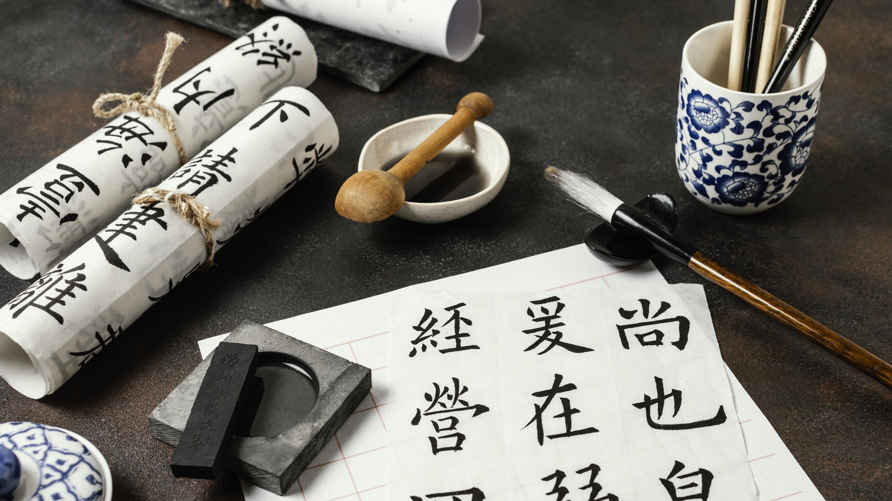

Les Bibliothèques Japonaises :
un Voyage à travers
L’Histoire et le Savoir

Les bibliothèques japonaise sont bien plus que des lieux de conservation. Elles sont des foyer de savoir, des témoins de l'histoire et de la transmission du patrimoine japonais.
Un peu d'histoire
-
Période Heian :
D'âge d'or de la culture japonaise ou la poésie, la littérature, l'art et la peinture ont de l'importance -
Moyen Age :
Apparition des écoles savantes comme l'Ashikaga Gakkō -
Période Edo :
Développement des bibliotheques publiques et universitaire -
Epoque moderne :
Apparition de la bibliothèque nationale de la Diète et expansion des centre de recherche

Types de bibliothèque japonaise

Importance culturelle et sociale
Les bibliothèques japonaise jouent un rôle essentiel dans la préservation du patrimoine, l'éducation et la diffusion du savoir.
Les 4 bibliothèques majeures
- Ashikaga Gakkō: Une école savante la plus ancienne du japon.
- Bibliothèque national de la Diète: La bibliotheques nationale du Japon
- Tōyō Bunko: Grandes bibliothèque d'études asiatiques
- Bibliothèque Waseda: Une des plus grandes bibliotheques universitaire du Japon